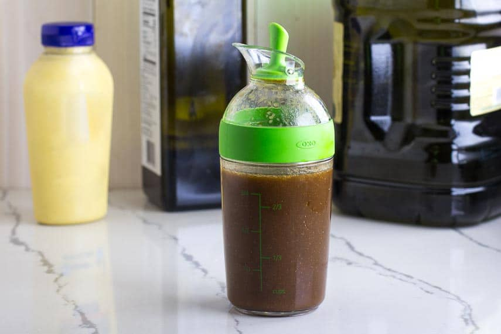

Low FODMAP Balsamic Vinaigrette

Description
The sweet yet tangy flavor profile of balsamic vinegar accents our daily green salad perfectly. All you need is balsamic vinegar, good olive oil and a bit of Dijon mustard.
Ingredients
- 1/3 cup balsamic vinegar
- 1 tbsp dijon mustard
- 1 cup olive oil
Steps
- Place ingredients in a lidded jar and shake it.
- Store at room temperature for up to 4 days.